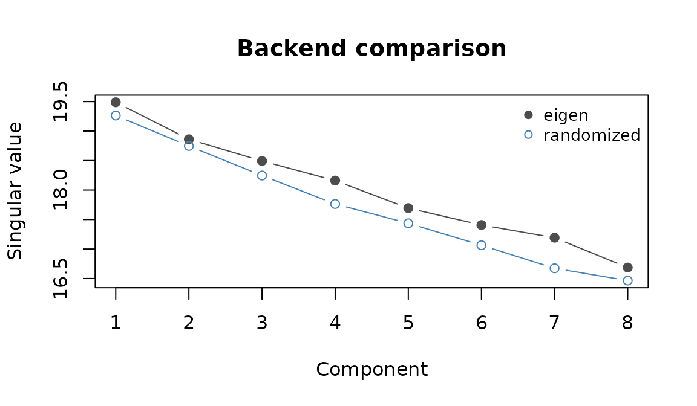
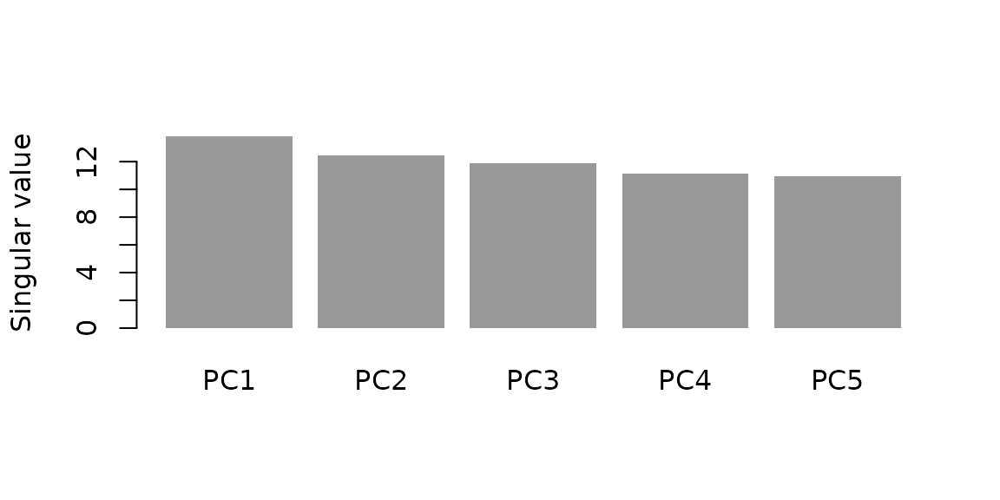
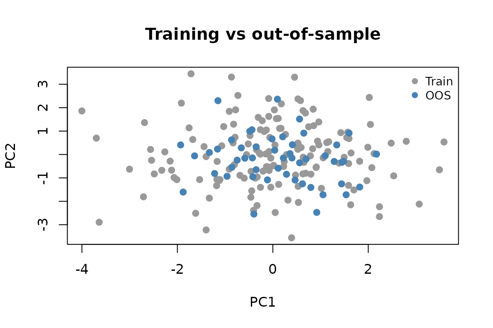

This vignette walks through the choices that matter once your data outgrows the defaults: which backend to pick, when to switch to a covariance-only fit, and how to project out-of-sample observations.
Backend selection
| Method | Best for | Pros | Cons |
|---|---|---|---|
eigen |
Small / medium dense problems | Robust reference behaviour | Can be expensive at scale; very large sparse
constraints may trigger truncated eigensolve via
maxeig
|
spectra |
Larger matrix-free solves | Lower memory than dense eigendecomp | Iterative behaviour can vary by conditioning |
randomized |
Wide (p >> n) low-rank
workloads |
Fast block GEMM / SpMM path | Approximation error depends on tuning |
deflation |
Few components, tight memory | Low memory footprint | Can converge slowly; monitor iteration warnings |
auto |
Default production usage | Picks among the dense and randomized paths | Heuristics may not be optimal for every regime |
In practice, leave it on "auto" unless you have a reason
to pin a backend.
Backends on the same problem
A small head-to-head on a dense problem so you can see how the singular values agree across paths:
set.seed(11)
n <- 150; p <- 60
X <- matrix(rnorm(n * p), n, p)
t_eig <- system.time(
fit_eig <- genpca(X, ncomp = 8, method = "eigen",
preproc = multivarious::center())
)
t_rnd <- system.time(
fit_rnd <- genpca(X, ncomp = 8, method = "randomized",
preproc = multivarious::center())
)
data.frame(method = c("eigen", "randomized"),
elapsed = c(t_eig["elapsed"], t_rnd["elapsed"]),
top_sv = c(fit_eig$sdev[1], fit_rnd$sdev[1]))
#> method elapsed top_sv
#> 1 eigen 0.099 19.48896
#> 2 randomized 0.008 19.14753
Singular values from the eigen and randomized paths agree to plotting precision on this dense problem.
Sparse workflow (spectra)
The spectra backend uses an iterative C++ solver and is
the right choice for large sparse problems. The chunk below is shown but
not evaluated to keep the vignette fast; it is the pattern to copy:
set.seed(42)
X_sparse <- rsparsematrix(800, 300, density = 0.005)
fit_sp <- genpca(X_sparse, ncomp = 5, method = "spectra",
preproc = multivarious::pass(),
constraints_remedy = "ridge")
fit_sp$sdevCovariance-only GPCA
When you already have the cross-product C = X' M X,
genpca_cov() avoids touching the full data matrix:
set.seed(123)
n <- 100; p <- 15
X <- matrix(rnorm(n * p), n, p)
M <- diag(runif(n, 0.8, 1.2))
A <- diag(runif(p, 0.7, 1.3))
C <- t(X) %*% M %*% X
fit_cov <- genpca_cov(C, R = A, ncomp = 5, method = "gmd")
fit_cov$d
#> [1] 13.80217 12.42550 11.92054 11.15895 10.96560
Singular values from the covariance-only fit.
Out-of-sample projection
Fit on training rows, then project held-out observations into the same component space:
set.seed(7)
X <- matrix(rnorm(200 * 30), 200, 30)
fit <- genpca(X[1:150, ], ncomp = 4,
preproc = multivarious::center())
scores_test <- multivarious::project(fit, X[151:200, ])
head(scores_test, 4)
#> PC1 PC2 PC3 PC4
#> [1,] 1.9323426 -0.4080526 -0.1924407 -0.6673048
#> [2,] 0.3498745 0.6490485 0.2579339 0.9996621
#> [3,] 0.9590113 0.9305126 -1.4603670 -1.1496702
#> [4,] 0.1125973 1.0845757 -0.2493420 -1.2509707
Training scores (grey) and out-of-sample scores (blue) projected into the same component space.
Performance tips
Keep data sparse when possible; avoid centering dense copies if you
plan to use spectra. Use
constraints_remedy = "ridge" for empirical metrics. For
large problems, limit ncomp to what you truly need, and
consider the covariance route when n is huge but
p is moderate.
Where next
See vignette("gpca-metrics") for building metrics, and
vignette("genpca") for a getting-started walkthrough.